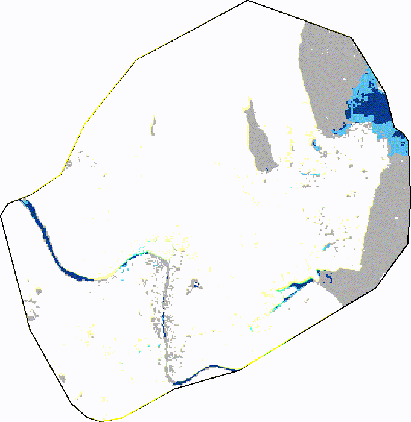
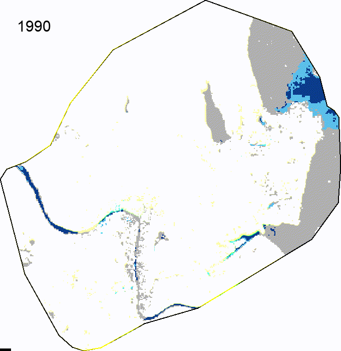
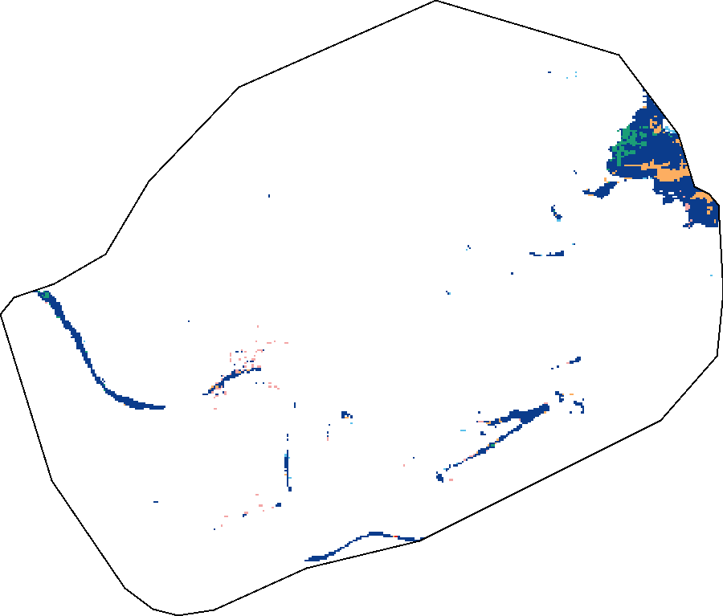

How have the areas of permanent and seasonal surface water inside Srinagar's urban boundary (64.9 km²) changed from 1990 to 2021? A 32-year, 30 m Landsat record, mapped and measured.
Comparing three-year means at each end (1991–93 vs 2019–21) so one unusual year cannot drive the result.
5.37 → 3.83 km². A steady decline of 0.061 km² per year (p < 0.001).
4.56 → 6.58 km². Peaked in 2016 at 7.04 km², the year permanent water hit its low.
9.92 → 10.41 km² (+4.9%). Roughly 16% of the city, with little net change.
The change is in persistence, not quantity: water is present, but less of it all year.
Drag the slider or press play. Every frame uses the same colours, so a colour always means the same class.


Annual permanent and seasonal water area. Shaded columns mark years with unusually high no-data share (1990, 1995, 1997); they are excluded from averages and trends.
Static version from the notebook: area_timeseries.png
| Class | 1991–93 mean | 2019–21 mean | Change | Trend / yr | Range |
|---|---|---|---|---|---|
| Permanent | 5.37 km² | 3.83 km² | −1.53 km² (−28.6%) | −0.061 | 3.52 (2016) – 5.39 (1993) |
| Seasonal | 4.56 km² | 6.58 km² | +2.02 km² (+44.3%) | +0.076 | 4.12 (2002) – 7.04 (2016) |
| Total water | 9.92 km² | 10.41 km² | +0.49 km² (+4.9%) | +0.015 | weak trend (p = 0.042) |
Linear regression on 1991–2021, excluding 1995 and 1997. A 0.49 km² change in total water is only about 540 pixels, so it should not be over-interpreted.
Class transitions between 1990 and 2021. Only pixels observed in both years are counted.

| 1990 ↓ / 2021 → | Not water | Seasonal | Permanent |
|---|---|---|---|
| Not water | 0.003 | 0.027 | 0.018 |
| Seasonal | 0.077 | 0.838 | 0.135 |
| Permanent | 0.001 | 0.221 | 0.897 |
Most water pixels kept their class. The main shift is permanent → seasonal (0.221 km²), roughly 1.6 times the seasonal → permanent flow (0.135 km²). The 1990 baseline has a high no-data share, so read this as indicative.
| Source | JRC Global Surface Water v1.4JRC/GSW1_4/YearlyHistory |
| Band | waterClass: 0 no data, 1 not water, 2 seasonal, 3 permanent |
| Resolution | 30 m, one image per year, 1990–2021 |
| Study area | Srinagar Municipal Corporation (J&K), 64.9 km², from Indian Urban Local Body boundaries |
| Platform | Google Earth Engine, geemap, Python |
pixelArea per class with reduceRegion at 30 m.Everything on this page is generated by the notebook and stored in the assets/ folder.
| Year | Permanent (km²) | Seasonal (km²) | Total water (km²) | No data (%) |
|---|